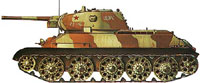
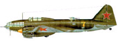
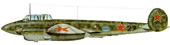
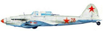
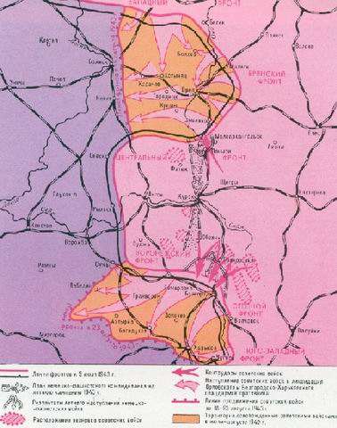

Курская битва
Полководцы
ВАСИЛЕВСКИЙ Александр Михайлович
ВАТУТИН Николай Фёдорович
ГАЛАНИН Иван Васильевич
ЖУКОВ Георгий Константинович
КОНЕВ Иван Степанович
РОКОССОВСКИЙ Константин Константинович
СТАЛИН (ДЖУГАШВИЛИ) Иосиф Виссарионович
Курская дуга... Теперь название этой великой битвы известно чуть ли не каждому жителю нашей страны и мира. Но когда-то и кем-то оно было произнесено впервые. Сначала оно упоминалось в секретных оперативных донесениях и военных сводках, поступавших из армейских штабов. Потом появилось на страницах военной печати. Из оперативных донесений и со страниц газет эта операция постепенно стала входить в военный лексикон, и на устах людей зазвучало новое, рождённое в боях название, а точнее, военное определение – Курская дуга. По своему размаху, направленности, результатам и значению сражение на Курской дуге стоит в ряду крупнейших сражений ХХ века. На поле боя с обеих сторон одновременно сошлись свыше 2236 тыс. солдат и офицеров, 6216 танков и самоходных установок, свыше 29 тыс. артиллерийских орудий и минометов, более 4200 боевых самолетов. А с учётом резервов обеих противоборствующих сторон, войск вермахта на Орловском выступе, советских войск Брянского фронта, то численность участвовавших в сражении войск превышала 4 млн. человек, танков и самоходных установок – 10000, артиллерийских орудий и минометов – 50000, боевых самолетов – 7000. Нигде и никогда на столь ограниченном пространстве не сходились в смертельной схватке такие массы людей и техники. И сейчас этот участок советско-германского фронта протяженностью свыше 600 км, где решалась основная задача летне-осенней кампании 1943 г., справедливо называют Огненной дугой.
Положение сторон к весне 1943 года
Положение сторон весной 1943 г., их перспективы определились в ходе операций и сражений на советско-германском фронте зимой 1942-1943 гг. В результате Сталинградской битвы фашистская армия была основательно надломлена, было разгромлено свыше 100 немецких дивизий, составлявших до 40% их соединений на советско-германском фронте. Наметился коренной перелом в войне.
Германия
Значительно ослабленными оказались танковые части Германии, которые в операциях 1941-42 годов служили главной ударной силой её сухопутных войск. Генерал Г.Гудериан – в то время генерал-инспектор бронетанковых войск – в марте 1943 года отмечал: «К сожалению, в настоящее время у нас нет уже ни одной полностью боеспособной танковой дивизии, однако успех боевых действий, как этого года, так и последующих лет зависит от того, удастся ли нам снова создать такие соединения. Если нам удастся разрешить эту задачу, то мы во взаимодействии с военно-воздушными силами и подводным морским флотом одержим победу. Если не удастся, то наземная война станет затяжной и дорогостоящей».1 Особенно большие потери понесли союзники Германии – румынские, итальянские и венгерские войска. Их боеспособность и боевой дух быстро таяли. Образовался кризис внутри фашистского блока, осложнилась обстановка в самой Германии. В ходе сражений зимы 1942-43 годов к советско-германскому фронту были прикованы главные силы фашистской армии. Это позволило англо-американскому командованию успешно провести наступательные операции в Северной Африке. Создавались благоприятные условия для открытия второго фронта в Европе. Однако на вашингтонской конференции глав правительств и начальников штабов Великобритании и США в июле 1943 года было принято решение отложить открытие второго фронта ещё на год. Такая позиция союзников дала возможность гитлеровскому руководству мобилизовать все свои промышленные и людские ресурсы для продолжения войны, по прежнему концентрируя главные силы на восточном фронте. В январе 1943 г. Гитлер издал указ «О всеобщем использовании мужчин и женщин для обороны империи», согласно которому все проживающие на территории Германии мужчины в возрасте от 16 до 65 лет и женщины от 17 до 45 лет подлежали мобилизации. Все мужчины от 17 до 50 лет направлялись на фронт. Для работы в промышленности и сельском хозяйстве широко использовалось население оккупированных территорий и военнопленные. По сравнению с 1942 г. производство танков в Германии возросло почти в 2 раза, самолетов – в 1,7 раза, артиллерийских орудий – в 2,2 раза.2 Вступили в строй новые танки «Тигр» и «Пантера», самоходные орудия «Фердинанд», новые истребители «Фокке-Вульф 190А» и штурмовик «Хейнкель-129». Были существенно улучшены боевые свойства прежних танков Т-III, T-IV, артиллерии. Появились более мощные противотанковые пушки 75- и 88-миллиметрового калибра. Все это дало возможность гитлеровскому руководству к весне 1943 г. восполнить потери войск и сформировать новые пехотные и танковые соединения. К лету гитлеровская армия имела на 43 дивизии больше, чем в канун войны против СССР. Гитлеровское руководство усиленно готовилось к тому, чтобы взять реванш за поражения минувшей зимы.
Советский Союз
Что касается Советского Союза, то, несмотря на ряд достигнутых военно-политических и стратегических успехов, обстановка для него оставалась крайне напряжённой и сложной. Враг был надломлен, но ещё полон решимости продолжать войну. Приходилось учитывать и возможность попыток гитлеровского руководства заключить сепаративный мир с нашими западными союзниками. В ходе ожесточённых зимних сражений советские войска понесли большие потери в личном составе и технике. Освобождённые районы находились в опустошенном состоянии. От Советского государства и всего народа требовались новое напряжение духовных сил, мобилизация всех экономических и военных возможностей для наращивания ударов по врагу до полного его разгрома. Положение осложнялось тем, что Германия продолжала опираться на промышленность и ресурсы Западной Европы. В 1943 году она ещё производила в 4 раза больше чугуна, стали и проката, почти в 6 раз больше угля, в 1,5 раза больше электроэнергии, чем Советский Союз. Поэтому только за счет более рационального использования имевшихся ресурсов и предельно напряжённого труда советских людей можно было превзойти врага и обеспечить победу. Эта задача была решена. В 1943 г. промышленность СССР произвела тяжелых и средних танков в 1,4 раза, боевых самолетов в 1,3 раза, орудий 76-миллиметрового калибра и выше – на 63%, минометов – на 213% больше, чем промышленность фашистской Германии. В течение года авиационные заводы выпустили около 35 000 самолетов, а танкостроители – 24 000 танков и самоходно-артиллерийских орудий.
Т-34
Наращивалось производство основной боевой машины – танков Т-34, – по праву считавшейся верхом развития танковой техники. Одновременно начался массовый выпуск самоходно-артиллерийских установок (САУ-152, САУ-76, САУ-85, ИСУ-152, ИСУ-122). Это позволило сформировать 5 танковых армий новой организации, состоявших только из танковых и механизированных корпусов и явившихся мощным средством нанесения контрударов в обороне и развитии успехов в наступлении. Появилась новая противотанковая пушка образца 1943 г., успешно поражавшая немецкие танки «Тигр» и «Пантера». Усовершенствованы были и другие артиллерийские системы; сформированы артиллерийские корпуса прорыва, пушечные артиллерийские дивизии, истребительно-противотанковые бригады РВГК. Вся артиллерия была переведена на механическую тягу, что значительно повысило её маневренность. Общевойсковые армии получили свою штатную артиллерию. Создание артиллерии РВГК и централизованное управление ею давало возможность оперативно перебрасывать её на решающие участки фронта, где выполнялись главные задачи. На вооружение авиации начали поступать новые, более современные истребители ЛА-4, ЯК-9, ЯК-3, усовершенствованные бомбардировщики ПЕ-2, ИЛ-4, штурмовики ИЛ-2.
Ил-4
Пе-2
Ил-2
Ставке Верховного главнокомандования удалось создать крупные стратегические резервы. К лету 1943 года в составе действующей Красной Армии насчитывалось 6442000 солдат, сержантов и офицеров, 98790 орудий и минометов, 9580 танков и самоходно-артиллерийских установок, 8290 боевых самолетов.4 Завершался второй год войны, и Красная Армия, особенно её командные кадры, познавшие как тяжёлые поражения, так и крупные победы, приобрели значительный опыт ведения оборонительных и наступательных операций. В ходе Курской битвы Красная Армия, с точки зрения чисто военного противостояния и возможностей проявления военного искусства, впервые выступала примерно в равных с фашистской армией условиях. Например, соотношение сил сторон, сложившееся к июню 1941 года, характеризовало лишь их потенциальные возможности к началу войны. Фактически же из-за крупных политических просчетов сталинского руководства фронты Красной Армии были поставлены в такие условия, в которых они не могли реализовать свои боевые возможности. В результате огромных потерь, понесённых нашими войсками в первые же дни войны, особенно в авиации, дальнейшие сражения шли при подавляющем превосходстве противника. Примерно такая же обстановка сложилась и летом 1942 года. И только в 1943 году вследствие принятых политических и стратегических решений Красная Армия оказалась в ином, более благоприятном, чем в предшествующие два года войны, положении.
Планы германского командования
В планах на 1943 год Гитлер исходил из ложной посылки: военный потенциал СССР на исходе и «Советский Союз, понесший чудовищные потери, должен потерпеть поражение».5 Это было результатом не столько реальной оценки сложившейся военно-политической и стратегической обстановки, сколько упорного нежелания признать назревавший коренной перелом в ходе войны не в пользу Германии и стремления любой ценой одержать в 1943 году крупную победу.
Конфигурация Курского выступа создавала, по мнению гитлеровского командования, благоприятные возможности для окружения и последующего разгрома войск Центрального и Воронежского фронтов. Достигнув победы на Курской дуге, гитлеровцы намеревались развить своё наступление в северо-восточном направлении, выйти в глубокий тыл центральной группировки советских войск и создать новую угрозу Москве. Это коренным образом изменило бы военно-политическую обстановку на советско-германском фронте в пользу немецких войск. Вот почему свою летнюю кампанию 1943 года гитлеровское руководство планировало начать наступательными операциями, рассчитывая окружить и разгромить советские войска в районе Курского выступа. Предусматривались два мощных встречных удара: от Орла на юг и от Белгорода на север в общем направлении на Курск.
Вот что провозглашал Гитлер в своем приказе 15 апреля 1943 г:
«Я решил, как только позволят условия погоды, осуществить первое в этом году наступление «Цитадель». Это наступление имеет решающее значение... Победа под Курском должна явиться факелом для всего мира...»
Замысел советского командования
Советская разведка своевременно раскрыла план действий германского командования. Комплекс мер по отражению гитлеровских ударов и переходу в контрнаступление был предложен маршалом Советского Союза Г.К.Жуковым. Его точка зрения, поддержанная Генеральным штабом и командованием Центрального фронта, возобладала, хотя И.В.Сталин и колебался. Но, в конце концов, аргументы Г.К.Жукова, А.М.Василевского и К.К.Рокоссовского, подкреплённые детальной проработкой различных вариантов развития событий, убедили Верховного главнокомандующего принять решение о преднамеренной обороне.
В сжатом виде замысел действий советского командования состоял в том, чтобы переходом к преднамеренной стратегической обороне силами Центрального, Воронежского, Степного фронтов отразить летнее наступление немецко-фашистских войск, обескровить их последующим переходом в контрнаступление нанести поражение главным группировкам противника. С этой целью, начиная с конца февраля и до начала июля 1943 г., на всём Курском выступе производились напряжённые работы по созданию мощной оборонительной системы. Всё это время наши войска создавали, укрепляли и совершенствовали свои позиции. В ту пору сложилась поговорка: «Хороший окоп – броня для солдата». Вот почему бойцы трудились день и ночь, создавая развитую систему траншей и ходов сообщений.
Кроме оборонительных работ, проделанных непосредственно частями Красной Армии, особенно инженерно-саперными подразделениями, с помощью трудящихся прифронтовых районов было вырыто по всему Курску одних только траншей – десять тысяч километров, построены и восстановлены сотни мостов и тысячи километров шоссейных и грунтовых дорог. Объем работы был колоссальный. Нигде и никогда за всё время войны не было такой мощной глубокоэшелонированной, разветвлённой и разнообразной по характеру сооружений обороны. Для удара на Курской дуге советскими войсками было подготовлено 8 оборонительных полос и рубежей, связанных между собой промежуточными и отсечными позициями: общая глубина инженерного оборудования местности достигала 300 км. Эти оборонительные полосы, хорошо оснащённые инженерными сооружениями, позволяли свободно маневрировать огневыми средствами в бою и доводить до минимума потери от артиллерийско-миномётного и авиационного огня. Были созданы мощные минные поля на танкоопасных направлениях, резервы противотанковой артиллерии самоходных установок, танковых и моторизированных частей, в любую минуту готовых к контратаке.
Велась напряжённая боевая подготовка. Командирами, штабами и войсками отрабатывались способы действий по выполнению поставленных задач в обороне. Особенно интенсивно шли тренировки по выдвижению на назначенные рубежи с противотанковыми резервами и вторыми эшелонами. Всё это определило высокую организованность действий нашей армии в ходе оборонительного сражения. Уверенность и стойкость войск были обеспечены хорошей обученностью, умением владеть своим оружием, целеустремлённостью и высокой организованностью в действиях командиров штабов всех степеней, всей сложной и многообразной работой по подготовке оборонительной операции, что обеспечило её успех.
Накануне сражения
Гитлеровцы, готовясь к наступлению, стянули в состав ударной группировки 50 дивизий, в том числе 14 танковых и 2 моторизированные. Ещё 3 танковые дивизии и 1 моторизированная находились в ближайшем резерве. От Орла на Курск готовились наступать 6 танковых дивизий. Из района Белгород – Харьков к наступлению готовились 8 танковых дивизий.
В южную ударную группировку врага входили элитные соединения бронетанковых войск вермахта: танковые дивизии СС «Адольф Гитлер», «Рейх», «Мёртвая голова», моторизированная дивизия «Великая Германия», 10-я отдельная танковая бригада. Именно в состав этих соединений входили все танки «Тигр» и «Пантера», имевшиеся у врага на юге Курской дуги. Гитлеровские войска возглавляли: генерал-фельдмаршал Г.Клюге (группа армий «Центр») и Э.фон Манштейн (южная группа армий).
Советскими войсками командовали: генерал К.К.Рокоссовский (Центральный фронт) и генерал Н.Ф.Ватутин (Воронежский фронт). В состав двух советских фронтов входили: 10 общевойсковых армий, 2 танковые, 2 воздушные; 2 отдельных стрелковых корпуса и 4 отдельных танковых, а также части и соединения других родов войск. В распоряжении советского командования имелось большое число истребительно-противотанковых бригад и отдельных истребительно-противотанковых полков. Советские войска имели количественное превосходство над врагом в личном составе, артиллерии и танках (в авиации соотношение сил было примерно равным), но проигрывали ему в отношении качественного состава бронетанковых войск. В начале июля Ставка уведомила фронты о том, что вражеское наступление возможно в период с 3 по 6 июля, а в ночь на 5 июля были схвачены немецкие сапёры, разминировавшие проходы на своём переднем крае. На допросе они показали, что немецкие части уже заняли исходные позиции и в три часа утра пойдут в наступление. Командованию предстояло решить: верить пленным или нет. Если немецкие саперы говорили правду, надо было начинать запланированную на этот случай контрартподготовку, на которую выделялось до половины боевого комплекта снарядов и мин. «Времени на запрос Ставке не было, обстановка складывалась так, что промедление могло привести к тяжёлым последствиям, - вспоминает маршал Советского Союза К.К.Рокоссовский. – Присутствующий при этом представитель Ставки Г.К.Жуков, который прибыл к нам накануне вечером, доверил решение этого вопроса мне». Ответственность была, конечно, колоссальная, но прославленный в московских и сталинградских боях полководец, детально знавший обстановку на фронте, взвесив все «за» и «против», принял смелое, а главное – правильное решение.«И грянул бой...»
...5 июля в 2 часа 20 минут на большом участке фронта южнее Орла предрассветную тишину, царившую над позициями, потряс гром сотен батарей. Одновременно не менее сильный огонь по приказу командующего Воронежским фронтом Н.Ф. Ватутина был открыт и на южном фасе дуги, в районе Белгорода. Это было для гитлеровцев как гром среди ясного неба.  В первые часы боя полная неопределённость царила и на стороне советского командования, Г.К.Жуков и А.М.Василевский с волнением ожидали результатов предпринятой артиллерийской контрподготовки. Об этих часах неопределённости вспоминает лейтенант И.М.Чистяков, командующий 6-й гвардейской армией: ─ Всех тревожило одно: пойдут немцы в наступление сразу же после нашей контрподготовки или нет? Это – главное. Но и другая мысль беспокоила: не ударили мы по пустому месту? Уже больше двух часов прошло со времени нашей артподготовки, а противник молчит, не наступает. Вдруг звонит ... генерал Ватутин и спрашивает меня: «По данным вашей разведки, немцы должны уже давно наступать». Я молчу: ничего утешительного сказать ему не могу. А он продолжает: ─ Не потратили ли мы несколько вагонов боеприпасов напрасно? Тогда, считай, влипли мы с тобой в историю... Слова эти резанули по сердцу. Но в это самое мгновение послышался отдаленный гул моторов, и я с облегчением буквально закричал в трубку: ─ Товарищ командующий, слышен гул моторов! Приближаются ... вражеские танки! Да вот и артиллерия его заговорила. ─ Ясно. Желаю успехов! – ответил мне Николай Федорович и повесил трубку. Лишь в 4 часа 30 минут, то есть с опозданием почти на два часа, а кое-где и позже, гитлеровцы начали своё наступление, сопровождаемое массированными ударами артиллерии и Люфтваффе. В первые же часы боя в сражение были введены сотни танков. Нигде и никогда, ни до, ни после Курской битвы гитлеровцам не удавалось достичь такой плотности бронетанковой техники. На отдельных участках на один километр фронта приходилось до ста вражеских танков и штурмовых орудий. Но советские войска выдержали удар этого стального тарана. Натолкнувшись на глубокоэшелонированную оборону советских войск, гитлеровская группировка, наступавшая с севера, увязла в ней, понесла тяжёлые потери в технике и людях, и уже к 12 июля продвижение гитлеровских войск было полностью остановлено, они смогли продвинуться всего на 10-12 километров. Массирование артиллерии, умелое использование танков и авиации помогли командованию Центрального фронта в короткие сроки остановить вражеское наступление. Важную роль сыграл и контрудар, нанесённый 6 июля силами 17-го и 18-го гвардейских стрелковых корпусов, 2-й танковой армии (3-й и 16-й танковые корпуса) и 19-го танкового корпуса. Хотя врага и не удалось отбросить на исходные позиции, его продвижение застопорилось, гитлеровцам пришлось производить перегруппировку войск. С юга наступала более крупная группировка врага. И её продвижение было более значительным. Здесь, на Обояньском и Прохоровском направлениях, развернулось одно из ожесточённейших танковых сражений Великой Отечественной войны.Прохоровское поле
Благодаря полуторному превосходству в танках и умелому маневрированию силами гитлеровцам удалось продвинуться на 30-35 км в полосе обороны Воронежского фронта. Но 9 июля враг был остановлен. Тогда гитлеровское командование, чтобы продолжить наступление на север, решило использовать брешь, пробитую на стыке 6-й и 7-й гвардейских армий, обойти Обоянь с востока и нанести удар основными силами на Прохоровку: это был для противника кратчайший путь с юга на Курск вдоль Симферопольского шоссе. Одновременно и генерал армии Н.Ф.Ватутин подготовил войска фронта к нанесению контрудара именно в этом направлении, имея целью разгромить на этом участке сильную вражескую группировку, освободить Белгород, развить контрнаступление в сторону Днепра. Рано утром 12 июля началось танковое сражение под Прохоровкой. На небольшом пространстве, зажатом между рекой Псел и железнодорожной насыпью, сближались две танковые лавины. Наши машины на полном ходу врезались в боевые порядки противников. На поле боя перемешалось огромное количество танков. Снаряды, посылаемые с близких расстояний, пробивали броню, взрывались боеприпасы, башни танков от удара отлетали на несколько метров... Советские танкисты действовали не только огнем, скоростью и маневром своих «тридцатьчетверок», но и их ударной массой, часто идя на таран. Над полем боя среди орудийных выстрелов различались душераздирающий скрежет брони и стали, глухие, как тысячепудовый молот, удары огромной массы металла. И это продолжалось с раннего утра до самого заката. Металл плавился, а люди стояли, держались, боролись, стремясь пересилить, сломить танковый напор врага, обратить его в спять, одержать победу. Лишь с наступлением сумерек гул боя стал постепенно стихать. В гигантском «смерче» боя трудно было различить действия отдельных экипажей, и тем более людей. Героизм здесь был как нигде массовым. Сражались все, кто мог видеть, двигаться, стрелять, бросать гранаты и бутылки с зажигательной смесью да бить прикладом... Сражение под Прохоровкой, по утверждению военных специалистов, характеризовалось частым и резким изменением хода событий на разных направлениях, небывалой активностью и решительностью советского командования. На одних участках велись встречные бои, а на других – оборонительные, на третьих – наступательные, с отражением контратак противника. Павел Алексеевич Ротмистров в своей книге «Время и танки» характеризовал ход самого сражения так: «...Поле сражения клубилось дымом и пылью, земля содрогалась от мощных взрывов. Танки наскакивали друг на друга и, сцепившись, уже не могли разойтись, бились насмерть, пока один из них не вспыхивал факелом или не останавливался с перебитыми гусеницами. Но и подбитые танки, если у них не выходило из строя вооружение, продолжали вести огонь». ...Страшно было смотреть на поле отгремевшего сражения: И стихла битва, Словно истощила Все силы. И умолкло все кругом, Как в час, Когда гроза теряет силы, И катится Поле боя осталось за советскими войсками. Хотя победа далась высокой ценой: 350 танков и САУ остались на поле под Прохоровкой. Но и немцы оставили под Прохоровкой более 400 танков и штурмовых орудий. И если из 350 советских танков почти половина через день, два, три, неделю опять вошла в строй, немецкие танки были потеряны безвозвратно. Роль авиации Громадный вклад в победу под Курском внесли советские летчики. Советская авиация не имела значительного численного превосходства над Люфтваффе. Тем весомей была победа, одержанная в воздушном сражении за господство в воздухе над полем битвы на Курской дуге. Всего два-три дня потребовалось советским летчикам, чтобы небо стало безраздельно принадлежать им. А господство в воздухе помогало отражать атаки на земле. Удары штурмовиков нередко срывали наступление гитлеровцев. Особенно эффективно применялись кумулятивные противотанковые авиационные бомбы. И налеты десятков машин на места скопления гитлеровских танков превращали там все в кромешный ад. Не менее эффективно действовали пикирующие бомбардировщики ПЕ-2 – «пешки». Одна из вражеских атак на Поныри была отбита соединёнными усилиями наземных войск и 170 «пешек». Пикировщики, выстроившись в круг и сбрасывая по 1-2 бомбы за заход, буквально прижали наступавших гитлеровцев к земле. Атака противника была не просто сорвана, советские войска перешли в контратаку и отбросили вклинившегося противника на ранее занимаемые им рубежи. Итоги Итогом битвы на Курской дуге был разгром более чем 30 отборных дивизий вермахта, в том числе 7 танковых. Враг потерял более 500 тысяч человек убитыми, пропавшими без вести, пленными и уволенными с военной службы по увечьям, свыше 1500 танков, до 3700 боевых самолетов, свыше 3000 артиллерийских орудий. Советские войска ликвидировали Орловский и Белгородско-Харьковский плацдармы противника и создали условия для освобождения Левобережной Украины и выхода на Днепр. В этой битве окончательно потерпела крах наступательная стратегия вермахта. Победой под Курском и выходом к Днепру окончательно завершился коренной перелом в ходе войны. Германия и её сателлиты были вынуждены перейти к обороне на всех театрах военных действий. В воздушных сражениях под Курском советская авиация окончательно завоевала стратегическое господство в воздухе. В Курской битве советские войска проявили несгибаемое мужество и стойкость. Здесь судьбы мира взвешивались строго. Здесь танки наши шли, как корабли. Победные широкие дороги Среди цветов на запад пролегли. Мы бились от заката до заката, И были мы такими в том бою, Каких вы не видали на плакатах И не встречали в праздничном строю. (Александр Елькин, 1943 г) 132 соединения и части были преобразованы в гвардейские, 26 удостоены почетных наименований «Орловские», «Белгородские», «Харьковские» и «Карачаевские». Поражение в Курской битве поставило окончательный крест на гитлеровских претензиях на мировое господство. Отрывки из воспоминаний Маршала Советского Союза (тогда начальника Генерального штаба Советских вооруженных сил) А.М. Василевского и генерала-фельдмаршала, бывшего командующего группой армий «Юг» Э. фон Манштейна Александр Михайлович Василевский: «На советско-германском фронте наступило весеннее затишье. Лишь на Кубани продолжались ожесточенные сражения за завоевание господства в воздухе. В центре же, вокруг Курска, образовалась своеобразная дуга, обращённая в сторону противника. С севера над ней нависал находившийся в руках противника Орловский выступ. С юга линия фронта тянулась примерно по белгородской параллели. А западный конец дуги шёл чуть восточнее Севска, Рыльска и города Сумы. Внутри огромной дуги и близ неё стояли в напряжённом ожидании наши десять общевойсковых, две танковых и две воздушных армии Центрального и Воронежского фронтов». Эрих фон Манштейн: «Весна 1943 года поставила германское командование перед сложным решением (...) речь шла о двух альтернативных вариантах. Следовало ли сначала предоставить инициативу противнику и подождать его наступления, чтобы затем, при благоприятных условиях, перейти в контрнаступление? Или же попытаться сохранить инициативу за собой и нанести противнику удар прежде, чем он успеет прийти в себя от последней зимней кампании?» А.М. Василевский: «Ещё накануне первомайского праздника ЦК партии обратился с призывом к ВС (...) «Вперёд на Запад, за освобождение советской земли!» Цель нового наступления состояла в том, чтобы завершить наметившийся перелом в войне, разгромить вражеские группировки армий «Центр» и «Юг», освободить Левобережную Украину с угольно-металлургической базой Донбасс и восточные районы Белоруссии, изгнав гитлеровские войска за линию реки Сож, среднего и нижнего течения Днепра. К выработке плана предстоящих действий и всестороннему их обеспечению советское командование приступило сразу же после завершения зимней кампании – в конце марта 1943 года». Э.фон Манштейн: «На предполагаемом намерении врага (наступать) основывалась идея контрнаступления, о которой командование группы армий «Юг» неоднократно докладывало Гитлеру в феврале – марте. Нужно было с боями отступить перед ожидаемым на Донце наступлением противника с тем, чтобы позволить его ударным армиям продвинуться примерно до линии Мелитополь – Днепропетровск. Одновременно самые крупные силы нужно было сосредоточить позади северного крыла наших сухопутных сил. С их помощью следовало разбить ожидавшееся там наступление русских, чтобы потом ударить во фланг армий противника, продвигающихся через Донбасс в направлении нижнего Днепра, и уничтожить их на побережье (...). Но Гитлер менее всего был готов к возможному оперативному успеху ценой отказа – хотя бы и временного – от района Донбасса. С потерей этого района мы не смогли бы более обеспечить наше собственное военное производство. Тогда как для противника потеря Донбасса означала лишь сокращение производства стали на 25%. Более того, значение для нас месторождения марганца под Никополем вообще не поддается словесному выражению. Потеря Никополя (на Днепре, юго-западнее Запорожья) означало бы конец войне (...). Таким образом, на передний план с неизбежностью выступила идея использовать имевшуюся слабость противника после поражений, которые он потерпел к концу зимней кампании, чтобы нанести удар прежде, чем он снова будет способен вести оперативные действия (...). Так, в конце концов, пришли к плану «Цитадель». А.М.Василевский: «Казалось, для организации нашего наступления мы сделали все. Однако вскоре в намеченный Ставкой план летнего наступления, предусматривавший нанесение главного удара на Юго-Западном направлении, были внесены существенные поправки. Советской военной разведке удалось своевременно вскрыть подготовку гитлеровской армии к крупному наступлению на Курской дуге и даже установить его дату». Э.фон Манштейн: «Начало операции «Цитадель» предусматривалось на возможно более ранний срок. В качестве такового оба командования группами армий называли верховному главнокомандованию сухопутных сил начало мая при условии, что до этого закончился бы период весенней распутицы. Фактически операция «Цитадель» могла бы начаться примерно в середине мая». А.М.Василевский: «Анализируя разведывательные данные о подготовке врага к наступлению, фронты, Генеральный штаб и Ставка постепенно склонялись к идее перехода к преднамеренной обороне. Этот вопрос в конце марта – начале апреля многократно обсуждался в ГКО и Ставке. Тщательно, со всех сторон обсуждали мы этот вопрос по телефону с заместителем Верховного Главнокомандующего Г.К.Жуковым, который находился на Курской дуге, в войсках Воронежского фронта. В результате 8 апреля Г.К.Жуков направил Верховному Главнокомандующему обстоятельный доклад с оценкой обстановки, в котором изложил соображения о плане действий в районе Курской дуги. Там, в частности отмечалось: «Переход наших войск в наступление в ближайшие дни с целью упреждения противника считаю нецелесообразным. Лучше будет, если мы измотаем противника на нашей обороне, выбьем ему танки, а затем, введя свежие резервы, переходом в общее наступление окончательно добьём основную группировку противника». После принятия решения о преднамеренной обороне с последующим переходом в контрнаступление развернулась всесторонняя подготовка к предстоящим действиям. Одновременно продолжалась разведка сил и намерений противника, в результате чего советскому командованию стали достаточно точно известны сроки начала вражеского наступления, которое трижды переносилось Гитлером». Э.фон Манштейн: «Постфактум склоняешься к признанию: учитывая, что начало операции «Цитадель» откладывалось всё далее, командующие группами армий должны были бы разъяснить верховному командованию сухопутных сил, что это наступление теперь потеряло свой смысл, и поэтому его не следует проводить (...). В годовщину взятия Севастополя я должен был лететь в Бухарест, чтобы вручить маршалу Антонеску золотой герб Крыма. В последний момент полёт был отложен, так как Гитлер приказал всем командующим и командирам соединений сухопутных войск и авиации, предусмотренных для участия в операции «Цитадель», прибыть 1 июля в его ставку в Восточной Пруссии. На этом совещании, которое, как всегда перед подобной аудиторией, являлось исключительно докладом Гитлера, он сообщил своё окончательное решение: провести операцию «Цитадель». Наступление должно было начаться 5 июля». А.М.Василевский: «3 июля на Воронежском и на Центральном фронтах прошло, как и все последующие дни, спокойно. А с 16 часов 4 июля противник предпринял на широком участке Воронежского фронта боевую разведку примерно четырьмя батальонами, поддерживаемыми двадцатью танками, артиллерией и авиацией (около 150 самолетовылетов). Все попытки врага вклиниться в наш передний край были отбиты. Захваченный в бою пленный, немец из 168-й пехотной дивизии, показал, что войскам розданы на руки сухой паёк, порции водки и что 5 июля они должны перейти в наступление. Из телефонного разговора с Жуковым я узнал, что то же самое подтверждают немецкие перебежчики, перешедшие к нам 4 июля на Центральном фронте. Посоветовавшись с Ватутиным, мы решили в ночь на 5 июля повести предусмотренную планом артиллерийско-авиационную контрподготовку, которая как выяснилось позднее, дала исключительный эффект. Противник, находившийся в исходном для наступления положении, понёс большие потери в живой силе и технике... Гитлеровцы с трудом смогли начать наступление вместо 3-х часов утра 5 июля тремя часами позже. Так развернулось великое сражение на Курской дуге. В этот день, одновременно с севера и юга, перешли в наступление на Курск обе вражеские группировки». Э.фон Манштейн: «5 июля началось наступление на фронтах обоих групп армий после того, как до этого вечером 4-я армия в результате внезапного частичного нападения завладела наблюдательными пунктами, которые для ведения операции были необходимы». А.М.Василевский: «В целом вражеское наступление продолжалось менее недели и 12 июля кончилось провалом. В итоге беспримерного сопротивления советских войск, противник, понеся огромные потери и продвинувшись до 12 километров на северном фасе Курской дуги и до 35 километров на южном, был вынужден прекратить наступление и затем начать отвод своих войск (...). Главным итогом оборонительного сражения следует, на мой взгляд, считать поражение танковых соединений врага, в результате чего возникло особо благоприятное для нас соотношение сил по этому важному роду войск. В значительной степени способствовал этому выигрыш нами крупного встречного танкового сражения южнее Прохоровки в 30 километрах от Белгорода. Мне довелось быть свидетелем этого поистине титанического поединка двух стальных армад (до 1200 танков и САУ), который произошел на южном фасе Курской дуги 12 июля». О Прохоровке вспоминают участники крупнейшего танкового сражения второй мировой войны Вильгельм Рёс, радист командирского танка войскового соединения «Адольф Гитлер»: «Ту местность я и сегодня ещё вижу перед собой, словно был там вчера. Сто раз, не меньше, мне снился сон, будто я стою там, у Прохоровки, вокруг подбитые танки, и я один. Для солдата нет ничего страшнее, чем оказаться одному на вражеской территории... И вот, наверное, раз сто я уже видел во сне, что нахожусь там, на поле битвы, и что я совсем один. Но потом поле исчезает, и передо мной лишь противотанковый ров да эта бескрайняя зелёная поверхность. И мне нужно домой. И я пытаюсь представить себе: две тясячи километров или сколько? – и можно идти домой... И в этот момент я всегда просыпаюсь». Евгений Львович Дон, водитель танка: «Очень тяжёлые и сегодня вижу сны, нехорошие. Отдельно голова, отдельно рука, ямы, бой... Жуткие сны. Жуткие!» Карл Ульрих, командир полка мотопехоты танкового соединения дивизии «Тотен Копф» («Мёртвая голова»): «Враг, большой дугой устремившийся на запад, должен был быть вдавлен немецкими войсками обратно. Удар северной группы войск должен был достичь Курска в то время как южная, в состав которой входил 2-й танковый корпус СС, ударяла с юга на Курск. Тем самым мы должны были создать возможность для уничтожения врага, который сидел там, внутри, в кишке». Владимир Николаевич Баскаков, генерал-майор, начальник штаба 5-й гвардейской танковой армии: «Мы верили в то, что высшее командование немецкой армии все-таки сильно подвержено шаблону: обязательно удар под основание клина V, к счастью нашему, мы не ошиблись. На тех участках, где мы ждали наступления противника, там раза в три, а то и в пять оборона была сильнее». К.Ульрих: «В 1943 году мы относительно превосходящими силами предпринимали подобные наступления. Несмотря на то, что иногда бывали обескровлены... Но с марта по июль мы получили прекрасное пополнение, получили новое оружие, новые машины. Да, нам было ясно: мы добьемся своего!» В.Н.Баскаков: «У нас не было принято считать врага дураком. Но какой же умный толкнет войска на эти страшнейшие укрепления? Вот этот умный самый и толкнул. Здесь немецкие войска умылись кровью основательно». В.Рёс: «Когда около 6 часов утра я вылез из танка, чтобы немного размять ноги, вдруг услышал: «Аларм! Аларм! (Тревога)». Это был крик, совершенно непривычный для наших ушей. Такие сигналы бывают в казармах, на учениях, но только не в танковых частях. «По машинам! Запустить двигатель! По машинам!» - звучало со всех сторон. Не успев ещё занять своих мест, мы уже увидели первые горящие Т-34, услышали грохот, крики...» Евгений Викторович Шкурдалов, заместитель командира танкового батальона: «Я видел только то, что было, так сказать, в пределах моего танкового батальона. Впереди нас шла 170-я танковая бригада. С огромной скоростью она вклинилась в расположение немецких танков, тяжёлых, которые шли в первой волне, и немецкие танки прошили наши танки. Танки шли очень близко друг к другу, а потому стреляли буквально в упор, попросту расстреливали друг друга. Эта бригада сгорела за какие-то пять минут – шестьдесят пять машин...» В.Рёс: «Тактика русских заключалась в том, чтобы массой подавить остриё нашего танкового клина, которое оказалось далеко впереди. То есть на полном ходу врезаться в наш строй, лишая нас преимущества в дальнобойности наших орудий». Олег Константинович Попов, офицер штаба 18-го танкового корпуса 5-й гвардейской танковой армии: «В Прохоровской операции только одно было непредвиденным. Как только мы стали входить в прорыв, а немцы начали тянуть «Тигры» и «Пантеры», наши пошли в лобовую атаку. Это не было запланировано, это никем не было писано. Это «матросовский» подвиг – на гибель, танк шел на верную гибель, Экипаж шел на смерть. Так оно и было – девяносто процентов гибли, десять процентов остались или уродами, или...» В.Рёс: «Они неслись на полном газу. На нашем участке им препятствовал противотанковый ров. На полном ходу они влетали в этот ров, за счет своей скорости преодолевали в нём три-четыре метра, но потом как бы замирали в слегка наклонном положении с пушкой, задранной кверху. Буквально на мгновение! Воспользовавшись этим, многие наши командиры танков стреляли прямо в упор». Е.В.Шкурдалов: «Мы рванулись вперёд, ну и ... Трудно сказать, но какой-то такой был у нас психологический момент, чтобы рвануться вперёд и нанести удар по немцам». Петр Яковлевич Булгаков, командир танка: «Боялся я обгара. Ведь как танк загорится, не успеешь выскочить – сгоришь и сам. Или обгоришь. Вот это страшное дело! Когда битва началась, сделался день, как ночь, ─ от взрывов бомб, снарядов... Горели танки, горела земля, горели люди, как все равно свеча. Жуть!» Е.В.Шкурдалов: «Удар наносят на удар, как в профессиональном боксе. Ты ударил, подбил танк, где-то в это время сбоку бьют по тебе, ты куда-то отскакиваешь, в какую-то лощину или за другой танк, опять бьёшь, и по тебе бьют». П.Я.Булгаков: «Своего танка не видишь, а у товарища видишь. И волосы встают дыбом, потому что видишь, что его танк живого человека раздавил, и кишки навернулись на гусеницы, на ленивцы танка! Это невыносимо!!! Ну, а если не давить, сожгут тебя... Ведь тот – противник твой. Ну, и ты вынужден... Вот какая это была страсть». В.Рёс: «Стреляют по машине, по людям вовсе не стреляют. И машину эту нужно обезвредить обязательно, иначе она обезвредит тебя. Подобные танковые сражения абсолютно безличны. Видны только стальные колоссы. Кругом, сколько хватало глаз, ─ горящие танки, из которых выскакивали люди, в том числе и красноармейцы, многие в кожаных комбинезонах, в горящих кожаных комбинезонах... Грохот, взрывы, пороховая вонь! Ад!!!» Е.В.Шкурдалов: «Первый танк я подбил, когда двигался вдоль посадки по железной дороге, и буквально на расстоянии сто метров увидел танк «Тигр», который стоял ко мне бортом и стрелял по нашим танкам. По-видимому, он подбил достаточно много наших машин, так как машины наши шли бортом к нему, и он стрелял по бортам наших машин. Я прицелился подкалиберным снарядом, выстрелил. Танк загорелся. Я ещё выстрелил, танк ещё больше загорелся. Экипаж выпрыгнул, но как-то мне было не до него. Я этот танк обошёл, потом подбил танк T-III, «Пантеру». Когда я «Пантеру» подбил, какое-то, знаете, возникло чувство восторга, что, вот видите, сделал такое героическое дело». В.Рёс: «Внезапно один Т-34 прорвался и двинулся прямо на нас. Как бортрадист, сидящий впереди справа в машине, я должен был не только следить за радиоприборами, но ёще обслуживать пулеметы, и к тому же я выполнял и роль заряжающего. То есть мне приходилось откидывать бронеспинку, проползать в заднюю часть танка, между ног первого радиста, который сидел на месте заряжающего, и заряжать пушку. И поскольку было невероятно тесно, а снаряды вертикально установлены и закреплены с помощью пружинного прижима в нише бокового борта, то ли от волнения, то ли от этой злополучной тесноты, словом, я никак не мог их достать». Е.В.Шкурдалов: «Я выскочил на высотку, и какое-то девятое чувство мне говорит: «Посмотри вправо!» Я резко повернул перископ вправо и увидел, что буквально в метрах шестистах в меня целится установка «Фердинанд». Это очень сильная была установка, которая имела броню около 55 мм, страшной силы 88-милиметровую пушку. Я успел только крикнуть механику-водителю (у нас был интернациональный экипаж, механик-водитель у меня был узбек Худдайберген Деснеязов), я крикнул ему: «Назад!», и в это время раздался страшный удар». В.Рёс: «Наш первый радист швырнул свой шлемофон вниз, рванул пружинный прижим в снарядной нише и, придерживая снаряды, стал по одному подавать их мне, чтобы я закладывал их в пушку. В это время наш командир наверху, не переставая, кричал: «Выстрел! Выстрел!», ─ потому что танк надвигался все ближе». Е.В.Шкурдалов: « «Фердинанд» пробил бортовой лист брони, лобовой, ударил в маску пушки, вырвал пушку, сорвал прицел, поворотный механизм. И хотя я был в бессознательном состоянии от этого удара, я чувствовал, что башня почему-то вращается, и я вращаюсь, какое-то такое было страшное состояние...» В.Рёс: «Я тогда зарядил четыре раза, но всякий раз был вынужден пережидать, пушка ведь откатывается назад, отбрасывая отработанную гильзу, только после этого можно закладывать новый снаряд. Между тем, командир уже три раза снова прокричал: «Выстрел!», и только после четвертого – «Выстрел» я услышал: «Слава Богу!» Потом спустя какое-то время мы определили, что Т-34 остановился всего в восьми метрах от нас! Наверху на башне у него, словно отштампованные, были 5-сантиметровые отверстия, расположенные на одинаковом расстоянии друг от друга, как если бы их отмерили циркулем». Е.В.Шкурдалов: «Спас нас от явной смерти наш механик Худдайберген Деснеязов, который перебитой рукой включил заднюю передачу. Таким образом, танк метра на два буксованно отскочил назад, а наводчик этого «Фердинанда» выстрелил с тем же прицелом, и снаряд только скользнул, срикошетировал по лобовому листу брони, высек сноп искр, и я от этого удара пришёл в себя. Мы дальше отскочили в посадку. Я спустился вниз... Да, пушка вращалась, я её застопорил ступором, чтобы она остановилась... Прицел внизу валялся, впереди сияла большая дыра, в которую был виден свет. Я спустился вниз, механик говорит: «У меня перебит рука». Я оттащил его на боеукладку. Посмотрел на радиста. Ему снарядом оторвало голову... Зрелище страшное. Заряжающий, пронизанный осколком снаряда, тоже был убит. В живых остались я и мой командир танка, лейтенант Кондрашкин». В.Рёс: «Разрытая, разорённая местность. Дымящиеся, тлеющие обломки танков. Небо ещё чёрное от дыма, который, правда, уже начало относить ветром... Это было после того, как всё закончилось. Зловещая картина. Зловещим был даже вечерний покой над землей. Было уже, наверное, 8 или 9 часов вечера, командир наш был на совещании, а мы – экипаж – ели свою колбасу из тюбиков, лошадиную колбасу или что там тогда было, и пели. После такого сражения! И не какие-нибудь там боевые гимны, а то, что тогда отвечало нашему настроению: «Родина, твои звёзды». Хотелось как-то унять тоску по дому». Е.Л.Дон: «Облегчение! Тут же были и гармошка, и гитара. Всё, как на войне: пока человек жив, он живой. Ему всё нужно: и письмо написать домой, и пошутить, и песню спеть». В.Рёс: «И вот мы так пели, как вдруг услышали, что позади нашего танка кто-то простонал: «Пан, вода. Пан, вода». Мы соскочили вниз и принялись искать, сначала на утрамбованном поле, а он лежал на колее, по которой мы недавно проехали. То был раненый, но на кукурузном поле из танка его совершенно не было видно, и мы его переехали. И теперь в области живота, начиная от ребер, этот человек был толщиной всего в три-четыре сантиметра, но был всё ещё жив, сердце всё ещё могло, наверное, биться. Мы постояли так около него, решив, что давать пить бессмысленно, это бы только усилило его страдания. Продлилось это недолго, и голова его откинулась в сторону... Был он совсем ещё молодой парень, лет, наверное, восемнадцати-девятнадцати, такой же, как и мы». А.М.Василевский: «Второй этап Курской битвы начался 12 июля и длился до 23 августа... Мы тогда не имели возможности тщательно анализировать итоги Курской битвы. Но одно было ясно: мы не только выиграли великую битву, но и сами выросли в ней. Оправдались наши замыслы при разработке плана летней кампании, мы научились разгадывать намерения врага. У нас хватило воли, характера, просто выдержки и нервов, чтобы не совершить просчёта, не начать преждевременно боевые действия, не дать врагу лишний шанс... В результате Курской битвы Советские Вооружённые Силы нанесли врагу такое поражение, от которого фашистская Германия уже не смогла оправиться». Э.фон Манштейн: «Неудачу операции «Цитадель» можно объяснить разными причинами, из которых существенной было отсутствие фактора внезапности. Несмотря на все отвлекающие, маскировочные мероприятия, наступление не смогло застать противника врасплох.Но усматривать причины срыва операций преимущественно в тактической сфере, значило бы пойти по ложному пути... С прекращением операции «Цитадель» инициатива на восточном театре военных действий окончательно перешла к советской стороне. После того, как нам не удалось окружить на Курской дуге значительные силы противника, а борьба против брошенных в сражение его оперативных резервов должна была прекратиться ещё до предопределённого финала, перевес сил врага отныне имел свои последствия. Наступление противника на Орловском направлении было лишь прелюдией его перехода к широкому наступлению вообще».